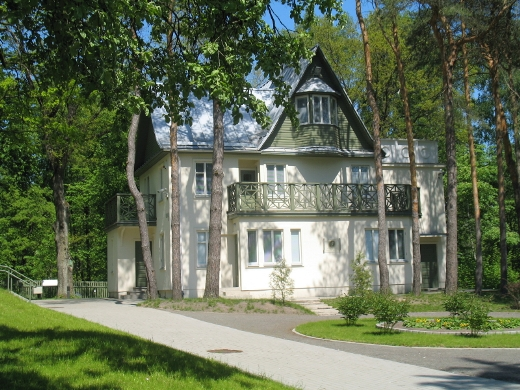

Salomėja Nėris (Bačinskaitė-Bučienė) - lietuvių poetė
Poezijos rinkiniai
- „Anksti rytą“
- „Pėdos smėly“
- „Per lūžtantį ledą“
- „Diemedžiu žydėsiu“
- „Eglė žalčių karalienė“
- „Dainuok, širdie, gyvenimą“
- „Lakštingala negali nečiulbėti“
- „Baltais takeliais bėga saulytė“
- „Širdis mana - audrų daina“
- „Kur baltas miestas“
- „Laumės dovanos“
- „Negesk, žiburėli“
- „Kaip žydėjimas vyšnios“
- „Prie didelio kelio“ (kt. pav. - Lakštingala negali nečiulbėti)
